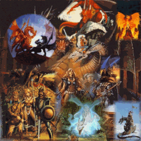

Creator:
Assistant:
Towns and Dungeons:
Graphics:
Aceron
Luz Piazuelo
Nethergate
Tim Farland
Cthulhu
Relhan
Beta Testers:
Leoj
Luz Piazuelo
Icon Graphics:
Luz Piazuelo
Here is the story line:
It is a couple thousand years after everything that happened in the Exile Trilogy. The Empire collapsed due to King Lawthorse messing around and trying to get more money. Soon most of the races that inhabit the earth joined into castles named after materials. Among these were The Ruby Knights, The Emerald Knights, The Coal Knights, The Glass Knights, The Crystal Knights etc. These Castles, however, were weak and couldn’t stand up to many attacks by hostile people, hundreds of these Castles are being wiped out and hundreds still are. Only the stronger castles remain, among these is The Crystal Castle led by a chubby man King Juverlerman. You grew up in the Crystal Castle and watched many of your friends get to be Crystal Knights. You never got there though, nobody bothered to promote you to a Crystal Knight, you are just a bunch of losers who the King doesn’t even like. You thought you would never get to be a Crystal Knights until someone hinted that the Dragon Knights had kidnapped the Kings Daughter, you figured if you could save Laini the promotion would be guaranteed and you would become a Crystal Knight. After a hard days work you take rest in Mary Janes hut and wake up good and ready for the task at hand, rescuing Laini from the Dragon Knights.
When making this scenario it was made with an idea of a sequel in mind, that is why there is so much free space in this scenario (or that is my choice anyway), the next scenario will be made for a party of medium difficulty where you can meet up with the Crystal Knights and do something important. If you liked this scenario and would like to play a sequel then e-mail me, my address and website are written at the bottom of this document. This also explains some things which you may not be able to enter, don’t try too hard to enter something if you can’t see a way in to start.
Enjoyed this scenario by Brave Sir Robin? Then you might want to try one of my other scenarios, The Chicken Plague or its sequel The Bigger Chicken Plague, maybe you would like the next in the trilogy The Final Chicken Plague or how about the Undead adventure Our Man Vlad or the buggy scenario of Lost Island? You can download all of these from my website, these scenarios will keep you playing not for very long but they are fun to do.
If you did really enjoy this scenario then e-mail asking for the sequel I will give make it if enough people ask for it.
I can offer you links to your site on my site, it will have a nice animated picture and I will drop in a good word. Just e-mail me with your site name and address and I will sort it for you.
My E-mail is-
6bmferguson@helstonschool.cornwall.sch.uk
To visit the Knights Who Say Ni Visit-
-Brave Sir Robin